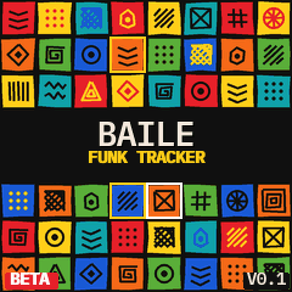

Samples
Converta os seus sons (WAV, MP3, OGG, FLAC) e mande até quatro para os espaços MEU 1 a MEU 4 do BAILE pelo USB, no Chrome ou no Edge. Nada sai do seu computador.
Feito para funk brasileiro: tamborzão, Volt Mix, 150, mandelão, brega funk e montagem, 6 faixas
Um firmware livre que transforma o M-VAVE FM-1 num tracker de funk: escreva os padrões em seis faixas (808, kits de baile, breaks picotados, FM, samples), encadeie numa música e toque os efeitos ao vivo. Beta, GPL-3.0.

Versão 0.1, ainda não testada num FM-1 de verdade. Passa em todos os testes automáticos (tamanho, memória, uma instalação testada contra quedas de energia simuladas, o simulador). É um firmware não oficial: instale por sua conta e risco. O firmware oficial volta com o M-UPGRADE (veja abaixo).
Carregando…
Gravando: não desconecte o FM-1, não feche nem recarregue esta página. Deixe esta aba na frente e o computador acordado até aparecer Pronto.
O pacote inteiro é conferido antes de apagar qualquer coisa: um pacote danificado, ou de outro modelo, é recusado e o firmware antigo fica. O bootloader do chip nunca é gravado. Se o cabo cair durante a gravação, conecte o FM-1 de novo e clique outra vez: a instalação continua de onde parou.
O instalador precisa de Web MIDI com SysEx: Chrome, Edge ou Opera num computador. Firefox e Safari não têm.
Outro navegador, ou não deu certo? Use o INSTALL-Windows.bat, o INSTALL-Mac.command ou o
INSTALL-Linux.sh do repositório (precisam de Python 3).
Não curtiu? O firmware da M-VAVE volta com a ferramenta da própria M-VAVE, o M-UPGRADE. Os seus projetos do BAILE se perdem. Leia os passos antes: README, voltar ao firmware oficial. Esta página não instala o firmware oficial.
tudo gravado do próprio firmware, no simulador
um fork do KAWA, de Omnipotard, com o baile dentro
VOLT, TAMBOR, 150, MANDELA, BREGA, MELODY, TUIN (sirenes, apito, tiro, o "tuin") e PERCUS (atabaques, surdo, cuíca, pandeiro, agogô…). Tudo sintetizado.
Tamborzão, Volt, 150, mandelão, brega e montagem, cada um fatiado em 16: o picador, rolos, avesso e tom em cada célula.
Sons novos: GRAVE 808 com glide, GRAVE TORTO, SUB, LEAD MELODY, PIANO MELODY, STAB, SIRENE. Um projeto novo já vem com o 808 e o tamborzão.
BEAT FUNK escreve o ritmo do kit, GRAVE 808 a linha de baixo, MONTAGE picota o break, VIRADA fecha o compasso. Grooves TAMBOR, BREGA, 150, MANDELA.
SEGURA, PUXA, SOBE, CORTA, ECO MC, GRAVE+, SIRENE, e os bancos DESTROI e BEAT do K-GLITCH.
A tela fala português (ou inglês, ou espanhol). A arara de headphone no canto pisca, dança e dorme.
Converta os seus sons (WAV, MP3, OGG, FLAC) e mande até quatro para os espaços MEU 1 a MEU 4 do BAILE pelo USB, no Chrome ou no Edge. Nada sai do seu computador.
Os botões, as páginas, os kits, a MÁGICA e um primeiro baile, passo a passo.
Toque o BAILE no navegador, sem FM-1: o próprio firmware, compilado para a web.
O firmware, as ferramentas e os testes. Software livre, GPL-3.0.